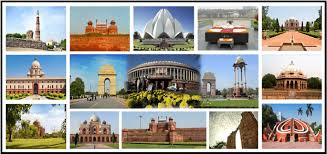
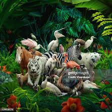
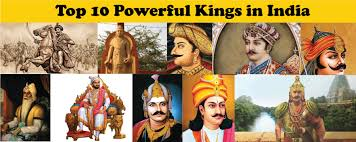
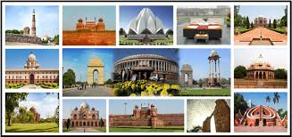
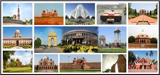
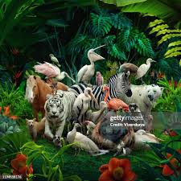
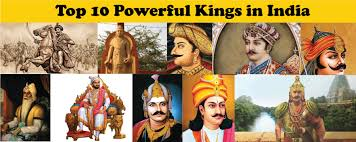
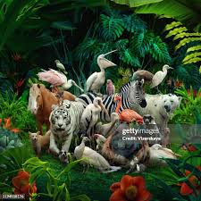
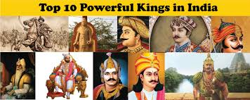

The photograph is evident in nearly every aspect of modern life. As a form of communication and documentation, photographs are present in newspapers, magazines, advertisements, posters, television, the Internet, passports, ID cards, archives, security and Surveillance Systems, forensics and medicine. Photography also plays an important role in domestic and recreational activities. Most photographs produced today take the form of Snapshots documenting activities such as holidays and celebrations. With the prevalence of digital cameras and mobile phone cameras, these activities are also documented for display on photo-sharing websites and photo-based Social Networking Sites. Despite the prevalence of photography in many aspects of modern life, only a small minority of photographs are considered to be art and tend to be displayed in museums and galleries in formats similar to painting.
The invention of photography is a contested subject. It was the outcome of many technological developments, most notably associated with the Industrial Revolution in the nineteenth century, but was also influenced by earlier technological developments such as the Camera obscura, which is an optical device used during the Renaissance to aid drawing and perspective.

This introductory text provides a brief overview of Photography. Art terms are indicated with an underline and their definition can be viewed by hovering the cursor over the term. They can also be found in the glossary.
The word Photography literally means drawing with light, which derives from the Greek photo, meaning light and graph, meaning to draw. Photography is the process of recording an image – a photograph – on lightsensitive film or, in the case of digital photography, via a digital electronic or magnetic memory.

.jpeg)
2.jpeg) 

.jpeg) 


